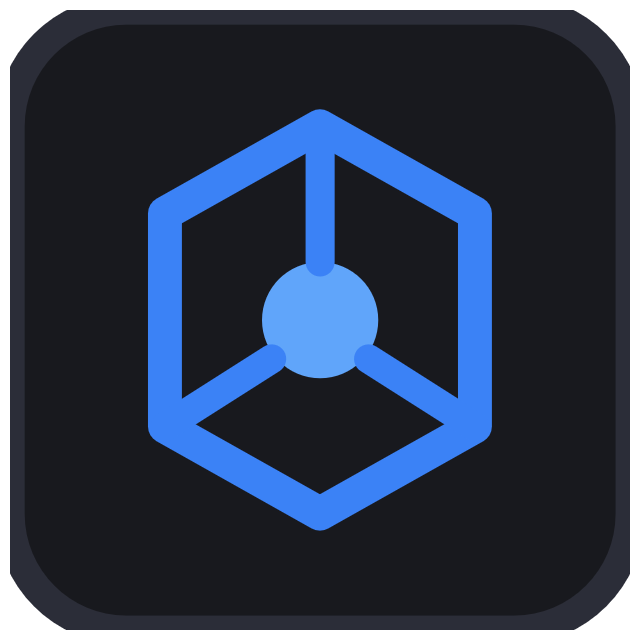

Индексируем файлы Codex. Исходники остаются без изменений.
Выберите папку сессий или отдельные файлы. Всё остаётся на вашем компьютере.
При следующем запуске откроются выбранные источники. Изменить выбор можно в настройках.